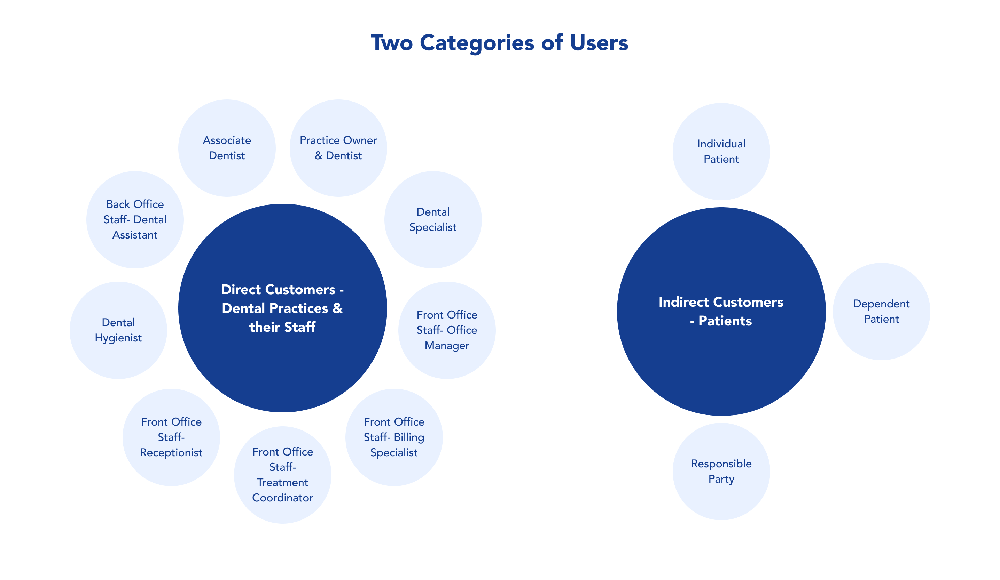
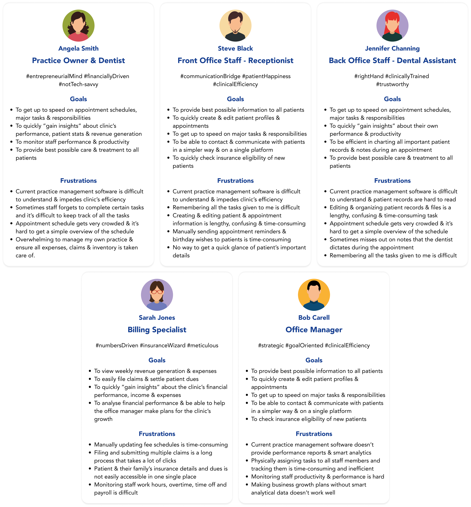
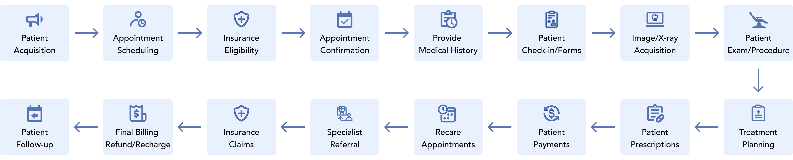
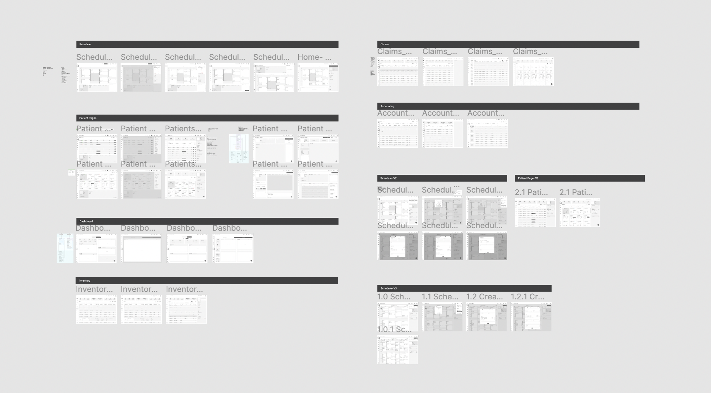
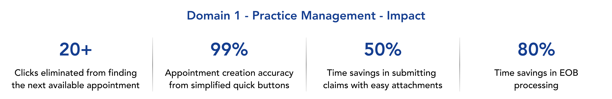

VRearth: Speculative Design
College Project (2022)
Client
Archy, Silicon Valley
Team
Individual
Role
UX Design Lead
Timeline
Apr 2021 - Jun 2022
Tools
Paper & Pen, Miro, Figma, Adobe Photoshop, Jira
Methods
Competitive Analysis, User Research, Information Architecture, Wireframing, High Fidelity Prototyping
Overview
This project is a Practice Management SaaS platform designed to help dental clinics modernize and improve their operations. It's a cloud-based CRM that is accessible from any device and compliant with HIPAA regulations. It also includes a patient portal, which is intended to strengthen the connection between clinics, healthcare providers, and patients. Overall, this project aims to be a state-of-the-art solution for managing dental practices.
Problem Space
Despite the advancements in technology over the past 30 years, dentistry has remained relatively unchanged. Many dental practices still rely on outdated methods, such as paper forms, scanners, and manual communication with patients. They also use server-based software that requires expensive equipment and IT support, leading to inefficiencies and lost production and revenue for both doctors and staff. It's clear that there is a need for more modern, efficient solutions in the dental industry.
Opportunity
There is a significant market opportunity for practice management products in the dental industry. A research study by the American Dental Association's Health Policy Institute found that there were 201,117 practicing dentists in the United States in 2020. Additionally, the average dental office spends around $15,000 annually on software and IT support. This demonstrates a clear demand for such products in the market.
Understanding Users
Before defining the product and it's features, it was essential to understand our users.
There are two categories of users; the platform's direct customers - dental practices and their staff; and
the customers’ customers - the patients. There are different user personas within each of these categories
as shown in the image below-

Direct Users - Dental Practices & their Staff
After identifying categories of user types, I conducted user interviews and collated information provided by the clients to create user personas that defined the goals and frustrations of users within dental practices.

Based on the user interviews and the personas, I created user journey maps to outline daily work flows of each user type which ultimately helped in defining the product features and the scope of the product MVP. Following are few of the user journey maps-


Indirect Users - Patients
After identifying the three user types within the indirect users category, I conducted user interviews and collated information provided by the clients to create user personas that defined their goals and frustrations.

To better understand the various stages of a patient's journey, the client provided me with a patient lifecycle chart. Using this information, I created a user journey map that outlines the typical experience of a patient from pre-appointment to post-appointment.

Wireframes
I developed several wireframe options for key areas of the product, including scheduling, patients, employees, and claims, based on the feature prioritization and information architecture. The wireframing process allowed me to determine the amount and type of information that needed to be displayed on each page. This helped me make design decisions such as whether to use a list or card format and whether modals or side drawers would be more suitable for tasks such as adding new patients or scheduling appointments. After multiple iterations and discussions with the client, we ultimately finalized the basic structure and layout of these screens.

Building a Design System
After examining various layout and structure options for the different domains using wireframes, I focused on selecting the color palette and fonts to establish the product's visual language. After reviewing various options and consulting with the clients, we decided to use shades of blue and green to convey credibility, trustworthiness, knowledge, power, and professionalism. Since these qualities are highly valued in the healthcare industry, and blue is already widely used by medical providers and organizations, consumers tend to associate it with the field of medicine. I further also established the icon styles and created multiple reusable components with different states and variants to assist both the clients and developers in understanding the nuances and interactions of the product.

Hi-Fidelity Designs

Scheduling - Smart & intuitive scheduling experience
- Two views - Toggle between room view & doctor view.
- Responsive columns - Helps larger practices to view entire practice's schedule without scrolling.
- Appointment cards - Displays the key information & allows easy access to edit status and to reschedule or delete the appt.
- Patient blurb - Provides the key information about the patient and their appointment in a concise way.
- Appointment Holder - Saves half-created appt. & allows users to complete it later.
Takeaways
As a UX design lead for the first time, this project allowed me to gain hands-on experience and learn valuable insights into the entire product development process, from inception to launch. Through this project, I not only only developed my design skills, but also learnt the art of effective communication, client management, and collaborating with multidisciplinary teams. Some of the key takeaways from this experience are-
- The importance of conducting extensive research and asking numerous relevant questions in order to fully comprehend the intricacies and subtleties of the the domain you are working in.
- Effective communication and clarity with clients leads to improved outcomes and a more efficient design process.
- Obtaining consistent feedback from users throughout the design process is essential in order to determine whether designs decisions are heading in the right direction.
- Techniques for presenting and handing off designs to non-designers, such as clients and developers.
- Strategies for effectively aligning user needs with business goals.
During the project, I made some design choices with accessibility and inclusivity in mind, such as including the appointment status in text along with color coding, and using a gender-neutral default user image. However, I later realized that I had not fully familiarized myself with accessibility guidelines like WCAG 2.0 and how they could have enhanced the product. As a result, I made a concerted effort to learn more about accessibility and inclusive design during my graduate studies in HCI at UMD.